Онцлогууд (Зургийг томсгох бол товшино уу.)
| OASIS OpenDocument-XML файлын формат |
| 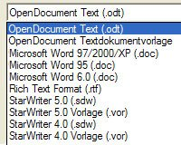 |
OpenOffice.org нь 2.0 хувилбараасаа эхлэн OASIS OpenDocument XML форматыг файл өгөгдмөл форматаараа хэрэглэж байна. OASIS OpenDocument нь програм болон үйлдлийн системээс хамааралгүй нэгдсэн баримтын формат тул ирээдүйд найдвартай.
OpenDocument нь OpenOffice.org-н хажуугаар бас нээлттэй эх бүхий албан програмууд болох KOffice ба OpenOffice.org-н анхдагч StarOffice зэрэгт хэрэглэгдэж байна. Үүнээс гадна OASIS OpenDocument файлын формат нь Европийн холбооны зөвлөлөөс зөвлөж буй формат билээ. |
| Үзүүлэгч: Хэрэглэгчийн гадаргуу |
 |
Олон муж бүхий хэрэглэгчийн гадаргуу нь Үзүүлэн боловсруулагчийн үйлчилгээг улам хялбар болгосон. Бүх чухал цонх болон хэрэгслүүд одоо нэг товшилтоор хүрэх боломжтой. Майкрософт PowerPoint дээр ажиллаж байсан хүний хувьд OpenOffice.org 2.0 хүүхдийн тоглоом шиг л хялбар гэсэн үг. |
| Өргөтгөсөн дүрслэл |
| 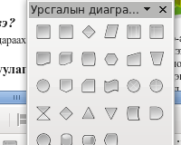 |
OpenOffice.org нь майкрософт Автоформтой төстэй дүрснүүдийн хэлбэрийг агуулдаг. Эдгээр нь импортлон зөв дүрслэгдэх боломжтой. OpenOffice.org 2.0 -н дүрсний хэлбэрүүдийн зөвхөн хэмжээ нь өөрчлөгдөх бус харагдалт нь ч өөрчлөгдөх боломжтой. |
| Хөдөлгөөн болон шилжилтийн гялбаа |
| 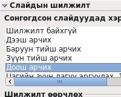 |
OpenOffice.org одоо илүү олон шилжилтийн гялбаа ба хөдөлгөөнтэй боллоо. Хэрэглэгч танд одоо өөрийн үзүүлэнгээ мэргэжлийн төвшинд бэлтгэх боломжтой болло. Одоогоор Майкрософт Powerpoint нийцтэй байх тал дээр түлхүү анхааруудя. |
| Өргөтгөсөн PDF экспорт |
| 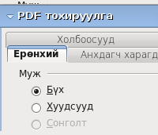 |
OpenOffice.org 1.1 хувилбараасаа эхлэн PDF шууд экспортлох боломжтой болсон. Харин 2.0 хувилбар нь энэ фунцүүдийг өргөтгөн бөгөөд шигтгэгдсэн зургийн шахах хувь хэмжээг тооцоолох боломжтой болсон бөгөөд холбоосууд зөв дүрслэгддэг болсон байна. |
| Өгөгдлийн сангийн нүүр |
| 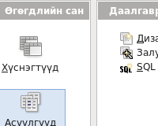 |
OpenOffice.org 2.0 нь өгөгдлийн сантай ажилладаг бусад програмууд шиг ажиллаж чадна. Шинэ өгөгдлийн сан үүсгэхдээ "Файл - Шинэ" цэс рүү орно. Туршлагагүй хэрэглэгчидэд ОпенОфис.орг өгөгдлийн сангийн залуурч санал болгодог ба түүгээр ямар нэг тусгай мэдлэггүйгээр өгөгдлийн сан үүсгэх боломжтой. Шинээр холбосон HSQLDB хэмээх Жава дээр суурилсан өгөгдлийн сангийн хөдөлгүүр нь "Өгөгдлийн сан баримт" үүсгэх бололцоо олгодог. Энэ энгийн өгөгдлийн санд MySQL эсвэл Adabas D гэх мэт сервер шаардлагагүй. Бүх мэдээллүүд нь (хүснэгтийн тодорхойлолт, өгөгдөл, холбоос, тайлан) XML файлаар хадгалагддаг. |
| Цуврал захианы залуурч |
| 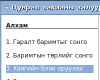 |
Шинэ цуврал захианы залуурчийг хэрэглэн цуврал захиануудыг олон тооны хүлээн авачид руу маш хялбархан илгээнэ. Залуурч нь үйл ажиллагааг алхам алхамаар хөтөлнө. Хаягийн өгөгдөлд янз бүрийн өгөгдлийн эхийг хэрэглэх боломжтой. |
| Өргөтгөсөн үгийн тоолуур |
| 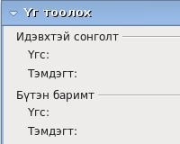 |
Урьд нь баримтын статистик өгөгдлийг зөвхөн "Файл - Тодруулга - Статистик" гэж хардаг байсан бөгөөд сонгосон муж дахь үгийн тоог тодорхойлох боломжгүй байлаа. OpenOffice.org 2.0 нь харин "Хэрэгсэл" цэсний тусламжтайгаар үгийн тоог олох боломжтой болсон юм. |
| Шатласан хүснэгт |
| 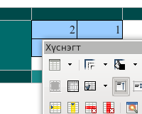 |
Та OpenOffice.org 2.0 хэрэглэн хүснэгт дотор хүснэгт үүсгэх боломжтой. Энэ нь зөвхөн ерөнхий функцыг сайжруулж буй хэрэг биш бөгөөд харин Майкрософт Ворд-той таарамжтай байх байдлыг нэмэгдүүлж байгаа юм. |
| Маягтын (XForm) дэмжилт |
| 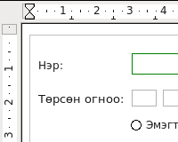 |
Та OpenOffice.org 2.0 ашиглан W3C-Стандарт-д суурилсан маягтуудыг хялбархан үүсгэж програмчлалын ямарч мэдлэггүйгээр өгөгдөл холбох боломжтой. |
| 65.536 мөртэй тооцоологч |
| 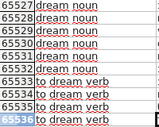 |
OpenOffice.org 1.1 баримтууддаа зөвхөн 32.768 мөр дэмжидэг байсан нь Майкрософт Эксел-тэй таарамжгүй асуудал үүсдэг байлаа. OpenOffice.org нь 2.0 хувилбараасаа эхлэн Экселтэй тэнцүү тооны мөр дэмжидэг болсон. |
| Залуурт хүснэгтийн дэмжилт |
| 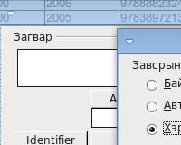 |
Залуурт хүснэгтийн тусламжтайгаар OpenOffice.org 2.0 (Майкрософт экселийн Пивоттабелтэй төстэй) шинэ бүлэг үүсгэх, өгөгдлийг утгаар нь шүүх, абсолют утгын оронд хувь болон зөрүүг нь харуулах гээд олон боломжтой болсон.
Шинэ залуурт хүснэгтийн функцүүд нь ОпенОфис.орг Тооцоологчийг өгөгдлийн анализ хийдэг хүчирхэг хэрэгсэл болгосон билээ. |
| Платформуудад зохицсон суулгалт |
| 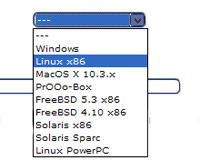 |
OpenOffice.org 2.0 платформ хамааралтай суулгалтын програмууд ашигладаг. Жишээлбэл: Майкрософт виндовсын хувьд .MSI, .EXE ба .CAB файлуудаар гаргадаг бол Линүсийн хувьд RPM ба DEB файлууд байдаг.
ОпенОфис.орг 2.0 нь тухайн ажлын орчины харагдац, нөхцөлтэй таарч ажилладаг бөгөөд Виндос дээр виндовс хэрэглээний програм шиг Линүкс дээр GIMP эсвэл Эволюшн зэрэг програмууд шиг харагддаг.
|
| Уян хатан багаж самбарууд |
| 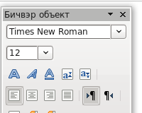 |
OpenOffice.org 2.0 багаж самбарууд маш уян хатан. Та зүгээр л хулганыхаа тусламжтайгаар чирээд дурын газраа байрлуулж, боловсруулж, тушиж, чөлөөлж болно. |

{kind=link}
{kind=link}
{kind=link}
{kind=link}
{kind=link}
{kind=link}
{kind=link}
{kind=link}
{kind=link}
{kind=link}
{kind=link}